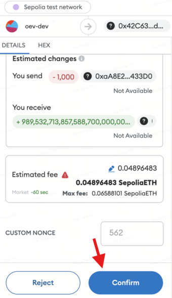

Merere
Limitatus
Gradus 1: Productum Tuum Seligere
→ Naviga ad tabulam Protocol et click in Merere.
→ Elige productum structum Limitatus.
→ Selige fundamentum bonum quod malis—BTC vel ETH.
→ Selige unum ex Optimum Electum Negotiationibus pro tuo electo bono.

Gradus 2: Recensere Negotiationis Detalia
→ Popup ostendet omnia pertinentia negotiationis informationes, inclusa Data Solutionis, Inferioribus et Superioribus Limitibus, Base Yield, Base+ RCH, Potentia Yield, et potentiales eventus sub variis scenariis.
→ Ingredere quantitatem tuam desideratam in USDT in Depositum Quantitatis capsula
→ click Depositum
→ tua wallet ostendet fenestram confirmationis.

Si vis aliquas details personalizare, procede ad Gradum 3.
Gradus 3: Negotiationem Tuam Personalizare
→ Click in iconem Personalizare sive ex pagina principalis Merere sive ex pagina producti detali quae in Gradum 2 memorata est.
→ In pagina Personalizare, potes mutare tua negotiationis occasus. Selige tua desiderata parametra:
Base Yield
Data Expirationis (id est, Data Solutionis)
Pretium Inferioris Limitis (B1) et Pretium Superioris Limitis (B2)
Depositum Quantitatis
et click Petere Pro Quotatione.
→ Post parametra constituenda, click Deposit ut pergere.

Gradus 4: Confirmatio Negotiationis Tuae
Cum rogatus, interagere cum sequentibus fenestris pro confirmatione negotiationis:
- Petitionem Signaturae: Fenestra petitionis signaturae primo apparebit. Click Sign ut auctoritatem det.
- Exsecutio Negotiationis: Post signandum, fenestra confirmationis apparebit. Click Confirm ut negotiationem finalizes.
✅ Fac ut utraque actio completa sit ad negotiationem tuam feliciter peragendam.


Gradus 5: Exsecutio Negotiationis
→ Gratulationes! Transactio tua in catena feliciter submissa est. ✅

Gradus 6: Monitoratio Positionis Tuae
→ Accede ad tabulam Position ut videas singula negotiationis tuae post exsecutionem negotiationis.


Gradus 7: Payouts Tuae Claudendae
→ In die solutionis (expirationis), vade ad tabulam Position, aperi tessera negotiationis tuae, et click Claim ut recipias payouts tuos.
Nota:
Pro productis Earn (secundis), omnia summae depositi in protocollo Aave stabulabuntur ad redditus passivos generandos. Praeterea, pars reddituum Aave retinebitur ut Base Yield, et reliqua pars ad strategias optiones ad redditus potentiales Upside generandos adhibebitur.
Trend Taurinus
Gradus 1: Selectio Producti Tui
→ Naviga ad tabulam Protocol et clicca in Earn.
→ Elige productum structum Bull Trend.
→ Elige fundamentum bonorum quod malis—BTC vel ETH.
→ Elige unum ex Top Pick Trades enumeratis pro bono tuo electo.

Gradus 2: Recensio Detalium Negotiationis
→ Popup ostendet omnia pertinentia informationes negotiationis, inclusa Data Solutionis, Inferioribus et Superioribus Strikes, Base Yield, Base+ RCH, Potentia Yield, et eventus potentiales sub variis scenariis.
→ Intra quantitatem tuam desideratam in USDT in Deposit Amount capsula → clicca Deposit → tua wallet ostendet fenestram confirmationis.
Si vis aliquas details personalizare, procede ad Gradum 3.

Gradus 3: Personalizatio Negotiationis Tuae
→ Clicca in iconem Customize sive ex pagina Earn sive ex pagina detalium producti mentionata in Gradum 2
→ In pagina Customize, potes mutare occasus negotiationis tuae. Elige parameters tuos desideratos: Base Yield Data Exspirationis (id est, Data Solutionis) Inferior Strike Price (K1) et Superior Strike Price (K2) Deposit Amount
et clicca Request For Quote.
→ Post setting parameters, clicca Deposit ut procedas

Step 4: Confirmatio Negotiationis Tuae
Cum rogatus, intercede cum sequentibus fenestris pro confirmatione negotiationis:
- Petitionem Signaturae: Fenestra petitionis signaturae primum apparebit. Clicca Signa ut auctoritatem praebeas.
- Exsecutio Negotiationis: Post signandum, fenestra confirmationis apparebit. Clicca Confirmare ut negotiationem finalizes.
✅ Utere ut ambobus actionibus peractis negotiationem tuam feliciter exsequaris.


Step 5: Exsecutio Negotiationis
→ Gratulationes! Tua transactio feliciter in catena submissum est. ✅

Step 6: Monitoratio Positionis Tuae
→ Accede ad tabulam Positionis ut tua negotiationis singula post exsecutionem negotiationis videas.


Step 7: Payouts Tuos Claudere
→ In die solutionis (expirationis), ad tabulam Positionis vade, aperi tuum negotiationis tessera, et clicca Claude ut tua payouts accipias.
Nota:
Pro productis Earn (tutis), omnia deposita summa in protocollo Aave stabulabuntur ad redditus passivos generandos. Praeterea, pars reddituum Aave retinebitur ut Base Yield, et reliqua pars ad strategias optionum ad redditus potentiales Upside generandos adhibebitur.
Trend Ursinus
Sequitur eadem vestigia ut delineata pro productum Trend Taurinum.